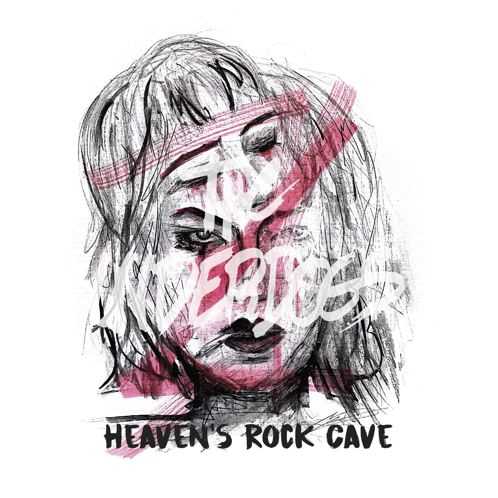
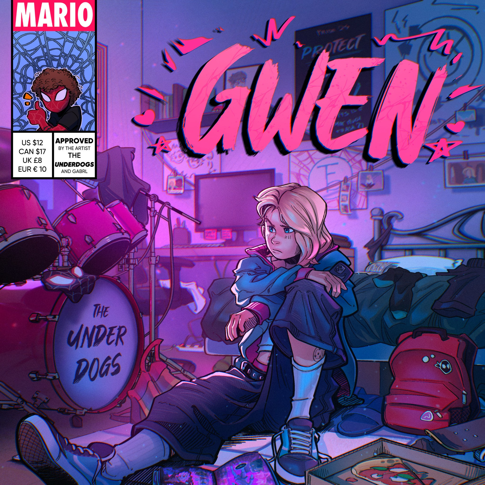
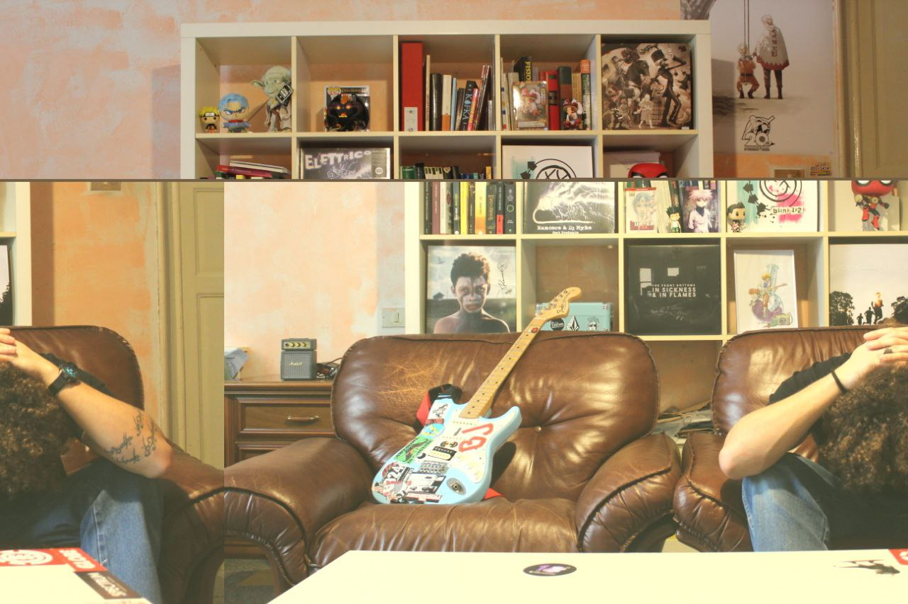
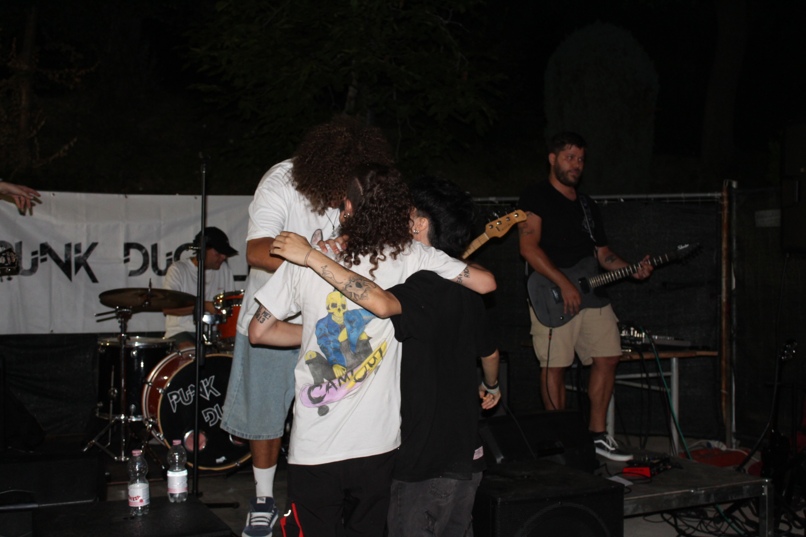
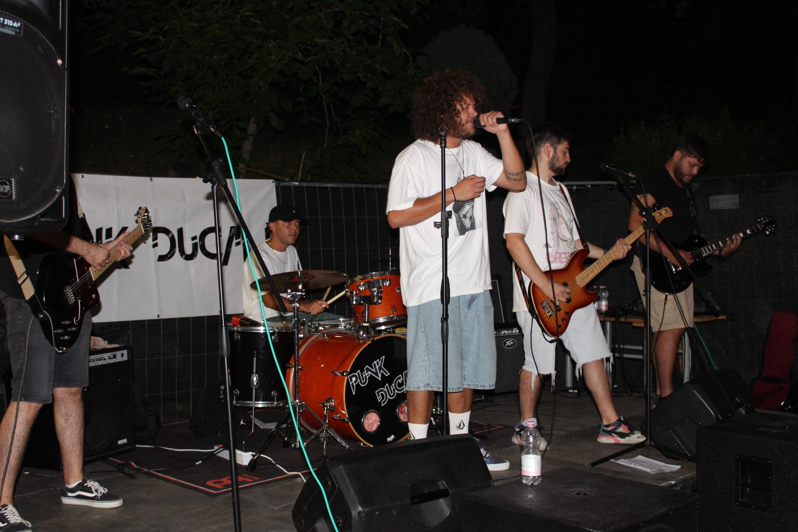
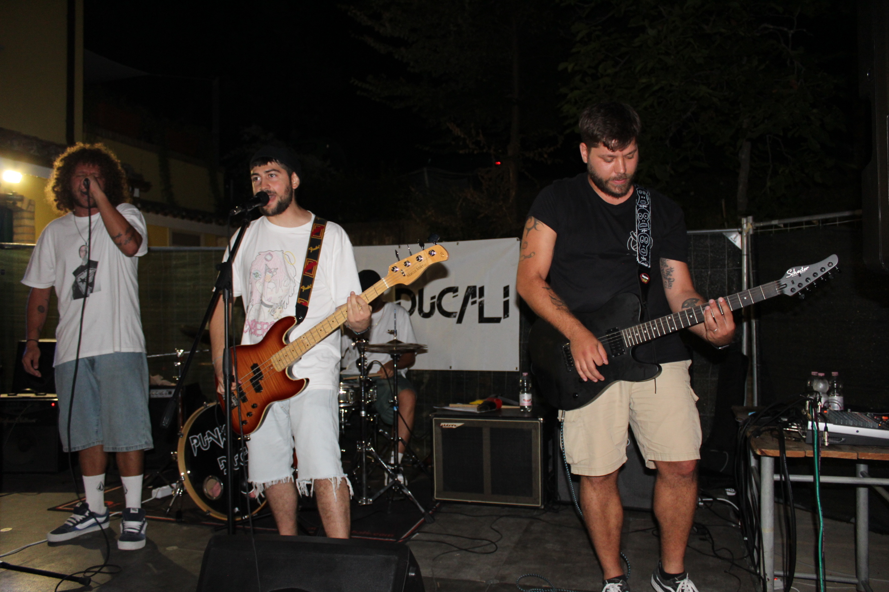
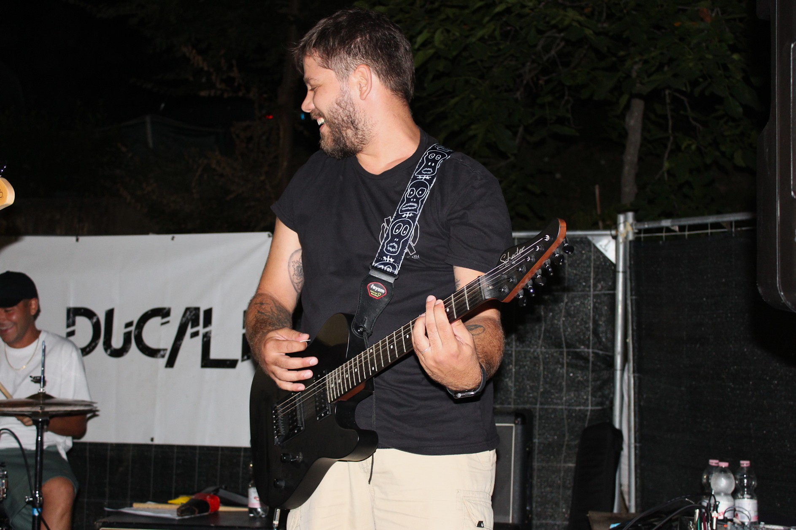

it's too late to save me
Latest releases

Videos
Photos





I wanna sing your silence
About The Underdogs
A hero syndromed pop punk band from Italy.
new music out soon.
Articles
Booking / Press / EPK
For shows, press, festival submissions, and collaborations.